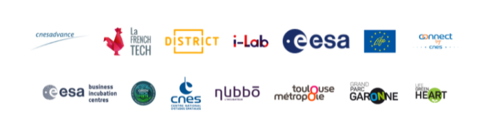

WaltR : l'innovation pour mieux comprendre la pollution de l'air

Qu'est-ce que WaltR ?
WaltR est une start-up issue du CNES, fondée en 2018, elle est basée sur Toulouse et Nantes. La start-up propose des services afin de mesurer la qualité de l’air et de gaz à effet de serre à l'échelle de la rue sur l’ensemble du territoire ou d’un site industriel, ces données vont servir à agir plus efficacement sur la réduction des émissions et l’adaptation du changement climatique. WaltR est dirigé par un PDG au nom de Eric Pequignot et son cofondateur qui a le rôle de CFO : Benoit Rader. Le projet de l’entreprise est d’analyser et de proposer des solutions efficaces afin de réduire le plus possible la pollution dans l’air. L’entreprise est en partenariat avec :
Que propose cette start-up ?
Les différents services proposé par la start-up sont des services afin de mesurer la qualité de l’air dans un lieu-donné et pour ce faire l’entreprise bénéficie d’une technologie de mesure issue de la recherche spatiale, brevetée.Afin de mesurer et d’analyser WaltR propose des camera multi-spectrale et des stations de mesure de la qualité de l’air par micro-capteurs.L’entreprise dépense surtout dans la recherche et développement et dans le matériel afin d’améliorer leurs services pour réduire les réductions de pollution.Leurs principales recettes: la vente de leurs produits et services pour l’analyse de l’air (pollution).Leur type de modèle adopté est la production en propre, ils font leurs propres recherches dans un domaine et développent leur propre produit avec leur propre matériel.
Ses activités principales et secondaires
Les activités principales de l’entreprise est de proposer des services afin d’analyser la qualité de l’air dans une zone grâce à des innovations technologiques fabriquées par eux-même. Leur activité secondaire quant à elle est la recherche et développement d’outils, afin d’améliorer leurs services pour offrir une meilleure solution contre la pollution atmosphérique.
Choix stratégiques
- Politique : C’est une grande opportunité pour l’entreprise car leur but est de
proposer des solutions contre la pollution et la pollution est au coeur des problèmes d’aujourd’hui
- Économique : Des entreprises et des villes font appel a WaltR afin de combattre la pollution.
- Socioculture : Il y a de plus en plus de gens qui combattent la pollution et WaltR a une grande opportunité de les aider eux et la ville à respirer un air plus pure.
- Technologique : Grâce à leurs recherches faites auparavant WaltR développent de grandes innovations technologiques dans le domaine des capteurs optiques et ces innovations représentent une grande opportunité pour l’entreprise.
- Écologique : Aujourd’hui les pays et entreprise sont de plus en plus intérrésser par le développement durable et WaltR propose des services plus que serviables pour ceux-là.
(surveillance du niveau de pollution de l’air)
- Legal : La start-up ne peux pas faire comme bon lui semble car il ya beaucoup de règle sur les données et l’installation du matériel en ville.
Découvrez Agreenculture, une autre entreprise de la GreenTech...
Découvrir AgreenCultureSources :
Ci-dessous les sources utilisée dans cet article
https://www.waltr.fr/ --> site officiel